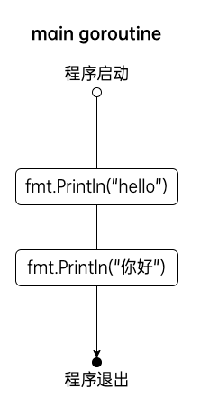
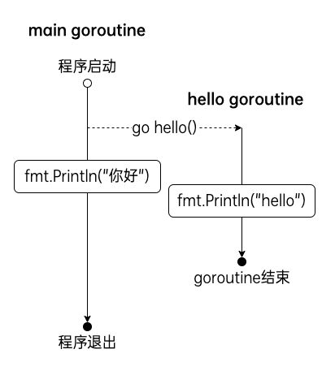
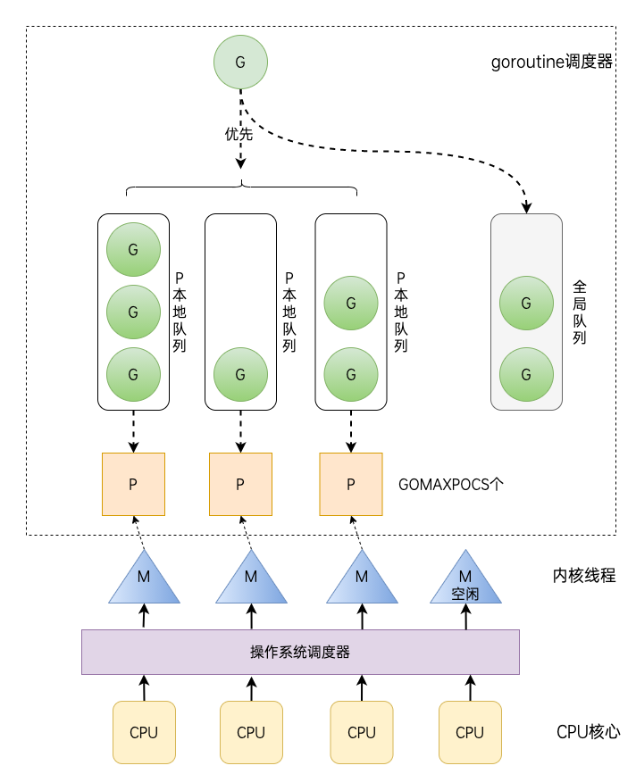
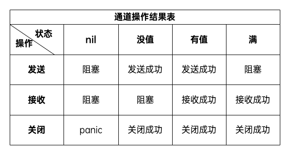

并发编程在当前软件领域是一个非常重要的概念，随着CPU等硬件的发展，我们无一例外的想让我们的程序运行的快一点、再快一点。Go语言在语言层面天生支持并发，充分利用现代CPU的多核优势，这也是Go语言能够大范围流行的一个很重要的原因。
1.基本概念
首先我们先来了解几个与并发编程相关的基本概念。
1.1 串行、并发与并行
串行：我们都是先读小学，小学毕业后再读初中，读完初中再读高中。
并发：同一时间段内执行多个任务（你在用微信和两个女朋友聊天）。
并行：同一时刻执行多个任务（你和你朋友都在用微信和女朋友聊天）。
1.2 进程、线程和协程
进程（process）：程序在操作系统中的一次执行过程，系统进行资源分配和调度的一个独立单位。
线程（thread）：操作系统基于进程开启的轻量级进程，是操作系统调度执行的最小单位。
协程（coroutine）：非操作系统提供而是由用户自行创建和控制的用户态‘线程’，比线程更轻量级。
1.3 并发模型
业界将如何实现并发编程总结归纳为各式各样的并发模型，常见的并发模型有以下几种：
- 线程&锁模型
- Actor模型
- CSP模型
- Fork&Join模型
Go语言中的并发程序主要是通过基于CSP（communicating sequential processes）的goroutine和channel来实现，当然也支持使用传统的多线程共享内存的并发方式。
2.goroutine
Goroutine 是 Go 语言支持并发的核心，在一个Go程序中同时创建成百上千个goroutine是非常普遍的，一个goroutine会以一个很小的栈开始其生命周期，一般只需要2KB。区别于操作系统线程由系统内核进行调度， goroutine 是由Go运行时（runtime）负责调度。例如Go运行时会智能地将 m个goroutine 合理地分配给n个操作系统线程，实现类似m:n的调度机制，不再需要Go开发者自行在代码层面维护一个线程池。
Goroutine 是 Go 程序中最基本的并发执行单元。每一个 Go 程序都至少包含一个 goroutine——main goroutine，当 Go 程序启动时它会自动创建。
在Go语言编程中你不需要去自己写进程、线程、协程，你的技能包里只有一个技能——goroutine，当你需要让某个任务并发执行的时候，你只需要把这个任务包装成一个函数，开启一个 goroutine 去执行这个函数就可以了，就是这么简单粗暴。
2.1 go关键字
Go语言中使用 goroutine 非常简单，只需要在函数或方法调用前加上go关键字就可以创建一个 goroutine ，从而让该函数或方法在新创建的 goroutine 中执行。
go f() // 创建一个新的 goroutine 运行函数f
匿名函数也支持使用go关键字创建 goroutine 去执行。
go func(){
// ...
}()
一个 goroutine 必定对应一个函数/方法，可以创建多个 goroutine 去执行相同的函数/方法。
2.2 启动单个goroutine
启动 goroutine 的方式非常简单，只需要在调用函数（普通函数和匿名函数）前加上一个go关键字。
我们先来看一个在 main 函数中执行普通函数调用的示例。
package main
import (
"fmt"
)
func hello() {
fmt.Println("hello")
}
func main() {
hello()
fmt.Println("你好")
}
将上面的代码编译后执行，得到的结果如下：
hello
你好
代码中 hello 函数和其后面的打印语句是串行的。

接下来我们在调用 hello 函数前面加上关键字go，也就是启动一个 goroutine 去执行 hello 这个函数。
func main() {
go hello() // 启动另外一个goroutine去执行hello函数
fmt.Println("main goroutine done!")
}
将上述代码重新编译后执行，得到输出结果如下。
你好
这一次的执行结果只在终端打印了”你好”，并没有打印 hello。这是为什么呢？
其实在 Go 程序启动时，Go 程序就会为 main 函数创建一个默认的 goroutine 。在上面的代码中我们在 main 函数中使用 go 关键字创建了另外一个 goroutine 去执行 hello 函数，而此时 main goroutine 还在继续往下执行，我们的程序中此时存在两个并发执行的 goroutine。当 main 函数结束时整个程序也就结束了，同时 main goroutine 也结束了，所有由 main goroutine 创建的 goroutine 也会一同退出。也就是说我们的 main 函数退出太快，另外一个 goroutine 中的函数还未执行完程序就退出了，导致未打印出“hello”。
main goroutine 就像是《权利的游戏》中的夜王，其他的 goroutine 都是夜王转化出的异鬼，夜王一死它转化的那些异鬼也就全部GG了。
所以我们要想办法让 main 函数‘“等一等”将在另一个 goroutine 中运行的 hello 函数。其中最简单粗暴的方式就是在 main 函数中“time.Sleep”一秒钟了（这里的1秒钟只是我们为了保证新的 goroutine 能够被正常创建和执行而设置的一个值）。
按如下方式修改我们的示例代码。
package main
import (
"fmt"
"time"
)
func hello() {
fmt.Println("hello")
}
func main() {
go hello()
fmt.Println("你好")
time.Sleep(time.Second)
}
将我们的程序重新编译后再次执行，程序会在终端输出如下结果，并且会短暂停顿一会儿。
你好
hello
为什么会先打印你好呢？
这是因为在程序中创建 goroutine 执行函数需要一定的开销，而与此同时 main 函数所在的 goroutine 是继续执行的。

在上面的程序中使用time.Sleep让 main goroutine 等待 hello goroutine执行结束是不优雅的，当然也是不准确的。
Go 语言中通过sync包为我们提供了一些常用的并发原语，我们会在后面的小节单独介绍sync包中的内容。在这一小节，我们会先介绍一下 sync 包中的WaitGroup。当你并不关心并发操作的结果或者有其它方式收集并发操作的结果时，WaitGroup是实现等待一组并发操作完成的好方法。
下面的示例代码中我们在 main goroutine 中使用sync.WaitGroup来等待 hello goroutine 完成后再退出。
package main
import (
"fmt"
"sync"
)
// 声明全局等待组变量
var wg sync.WaitGroup
func hello() {
fmt.Println("hello")
wg.Done() // 告知当前goroutine完成
}
func main() {
wg.Add(1) // 登记1个goroutine
go hello()
fmt.Println("你好")
wg.Wait() // 阻塞等待登记的goroutine完成
}
将代码编译后再执行，得到的输出结果和之前一致，但是这一次程序不再会有多余的停顿，hello goroutine 执行完毕后程序直接退出。
2.3 启动多个goroutine
在 Go 语言中实现并发就是这样简单，我们还可以启动多个 goroutine 。让我们再来看一个新的代码示例。这里同样使用了sync.WaitGroup来实现 goroutine 的同步。
package main
import (
"fmt"
"sync"
)
var wg sync.WaitGroup
func hello(i int) {
defer wg.Done() // goroutine结束就登记-1
fmt.Println("hello", i)
}
func main() {
for i := 0; i < 10; i++ {
wg.Add(1) // 启动一个goroutine就登记+1
go hello(i)
}
wg.Wait() // 等待所有登记的goroutine都结束
}
多次执行上面的代码会发现每次终端上打印数字的顺序都不一致。这是因为10个 goroutine 是并发执行的，而 goroutine 的调度是随机的。
2.4 动态栈
操作系统的线程一般都有固定的栈内存（通常为2MB）,而 Go 语言中的 goroutine 非常轻量级，一个 goroutine 的初始栈空间很小（一般为2KB），所以在 Go 语言中一次创建数万个 goroutine 也是可能的。并且 goroutine 的栈不是固定的，可以根据需要动态地增大或缩小， Go 的 runtime 会自动为 goroutine 分配合适的栈空间。
2.5 goroutine调度
操作系统内核在调度时会挂起当前正在执行的线程并将寄存器中的内容保存到内存中，然后选出接下来要执行的线程并从内存中恢复该线程的寄存器信息，然后恢复执行该线程的现场并开始执行线程。从一个线程切换到另一个线程需要完整的上下文切换。因为可能需要多次内存访问，索引这个切换上下文的操作开销较大，会增加运行的cpu周期。
区别于操作系统内核调度操作系统线程，goroutine 的调度是Go语言运行时（runtime）层面的实现，是完全由 Go 语言本身实现的一套调度系统——go scheduler。它的作用是按照一定的规则将所有的 goroutine 调度到操作系统线程上执行。
在经历数个版本的迭代之后，目前 Go 语言的调度器采用的是 GPM 调度模型。

其中：
- G：表示 goroutine，每执行一次
go f()就创建一个 G，包含要执行的函数和上下文信息。 - 全局队列（Global Queue）：存放等待运行的 G。
- P：表示 goroutine 执行所需的资源，最多有 GOMAXPROCS 个。
- P 的本地队列：同全局队列类似，存放的也是等待运行的G，存的数量有限，不超过256个。新建 G 时，G 优先加入到 P 的本地队列，如果本地队列满了会批量移动部分 G 到全局队列。
- M：线程想运行任务就得获取 P，从 P 的本地队列获取 G，当 P 的本地队列为空时，M 也会尝试从全局队列或其他 P 的本地队列获取 G。M 运行 G，G 执行之后，M 会从 P 获取下一个 G，不断重复下去。
- Goroutine 调度器和操作系统调度器是通过 M 结合起来的，每个 M 都代表了1个内核线程，操作系统调度器负责把内核线程分配到 CPU 的核上执行。
单从线程调度讲，Go语言相比起其他语言的优势在于OS线程是由OS内核来调度的， goroutine 则是由Go运行时（runtime）自己的调度器调度的，完全是在用户态下完成的， 不涉及内核态与用户态之间的频繁切换，包括内存的分配与释放，都是在用户态维护着一块大的内存池， 不直接调用系统的malloc函数（除非内存池需要改变），成本比调度OS线程低很多。 另一方面充分利用了多核的硬件资源，近似的把若干goroutine均分在物理线程上， 再加上本身 goroutine 的超轻量级，以上种种特性保证了 goroutine 调度方面的性能。
2.6 GOMAXPROCS
Go运行时的调度器使用GOMAXPROCS参数来确定需要使用多少个 OS 线程来同时执行 Go 代码。默认值是机器上的 CPU 核心数。例如在一个 8 核心的机器上，GOMAXPROCS 默认为 8。Go语言中可以通过runtime.GOMAXPROCS函数设置当前程序并发时占用的 CPU逻辑核心数。（Go1.5版本之前，默认使用的是单核心执行。Go1.5 版本之后，默认使用全部的CPU 逻辑核心数。）
2.7 练习题
- 请写出下面程序的执行结果。
for i := 0; i < 5; i++ {
go func() {
fmt.Println(i)
}()
}
3.channel
单纯地将函数并发执行是没有意义的。函数与函数间需要交换数据才能体现并发执行函数的意义。
虽然可以使用共享内存进行数据交换，但是共享内存在不同的 goroutine 中容易发生竞态问题。为了保证数据交换的正确性，很多并发模型中必须使用互斥量对内存进行加锁，这种做法势必造成性能问题。
Go语言采用的并发模型是CSP（Communicating Sequential Processes），提倡通过通信共享内存而不是通过共享内存而实现通信。
如果说 goroutine 是Go程序并发的执行体，channel就是它们之间的连接。channel是可以让一个 goroutine 发送特定值到另一个 goroutine 的通信机制。
Go 语言中的通道（channel）是一种特殊的类型。通道像一个传送带或者队列，总是遵循先入先出（First In First Out）的规则，保证收发数据的顺序。每一个通道都是一个具体类型的导管，也就是声明channel的时候需要为其指定元素类型。
3.1 channel类型
channel是 Go 语言中一种特有的类型。声明通道类型变量的格式如下：
var 变量名称 chan 元素类型
其中：
- chan：是关键字
- 元素类型：是指通道中传递元素的类型
举几个例子：
var ch1 chan int // 声明一个传递整型的通道
var ch2 chan bool // 声明一个传递布尔型的通道
var ch3 chan []int // 声明一个传递int切片的通道
3.2 channel零值
未初始化的通道类型变量其默认零值是nil。
var ch chan int
fmt.Println(ch) // <nil>
3.3 初始化channel
声明的通道类型变量需要使用内置的make函数初始化之后才能使用。具体格式如下：
make(chan 元素类型, [缓冲大小])
其中：
- channel的缓冲大小是可选的。
举几个例子：
ch4 := make(chan int)
ch5 := make(chan bool, 1) // 声明一个缓冲区大小为1的通道
3.4 channel操作
通道共有发送（send）、接收(receive）和关闭（close）三种操作。而发送和接收操作都使用<-符号。
现在我们先使用以下语句定义一个通道：
ch := make(chan int)
3.4.1 发送
将一个值发送到通道中。
ch <- 10 // 把10发送到ch中
3.4.2 接收
从一个通道中接收值。
x := <- ch // 从ch中接收值并赋值给变量x
<-ch // 从ch中接收值，忽略结果
3.4.3 关闭
我们通过调用内置的close函数来关闭通道。
close(ch)
**注意：**一个通道值是可以被垃圾回收掉的。通道通常由发送方执行关闭操作，并且只有在接收方明确等待通道关闭的信号时才需要执行关闭操作。它和关闭文件不一样，通常在结束操作之后关闭文件是必须要做的，但关闭通道不是必须的。
关闭后的通道有以下特点：
- 对一个关闭的通道再发送值就会导致 panic。
- 对一个关闭的通道进行接收会一直获取值直到通道为空。
- 对一个关闭的并且没有值的通道执行接收操作会得到对应类型的零值。
- 关闭一个已经关闭的通道会导致 panic。
3.5 无缓冲的通道
无缓冲的通道又称为阻塞的通道。我们来看一下如下代码片段。
func main() {
ch := make(chan int)
ch <- 10
fmt.Println("发送成功")
}
上面这段代码能够通过编译，但是执行的时候会出现以下错误：
fatal error: all goroutines are asleep - deadlock!
goroutine 1 [chan send]:
main.main()
.../main.go:8 +0x54
deadlock表示我们程序中的 goroutine 都被挂起导致程序死锁了。为什么会出现deadlock错误呢？
因为我们使用ch := make(chan int)创建的是无缓冲的通道，无缓冲的通道只有在有接收方能够接收值的时候才能发送成功，否则会一直处于等待发送的阶段。同理，如果对一个无缓冲通道执行接收操作时，没有任何向通道中发送值的操作那么也会导致接收操作阻塞。就像田径比赛中的4x100接力赛，想要完成交棒必须有一个能够接棒的运动员，否则只能等待。简单来说就是无缓冲的通道必须有至少一个接收方才能发送成功。
上面的代码会阻塞在ch <- 10这一行代码形成死锁，那如何解决这个问题呢？
其中一种可行的方法是创建一个 goroutine 去接收值，例如：
func recv(c chan int) {
ret := <-c
fmt.Println("接收成功", ret)
}
func main() {
ch := make(chan int)
go recv(ch) // 创建一个 goroutine 从通道接收值
ch <- 10
fmt.Println("发送成功")
}
首先无缓冲通道ch上的发送操作会阻塞，直到另一个 goroutine 在该通道上执行接收操作，这时数字10才能发送成功，两个 goroutine 将继续执行。相反，如果接收操作先执行，接收方所在的 goroutine 将阻塞，直到 main goroutine 中向该通道发送数字10。
使用无缓冲通道进行通信将导致发送和接收的 goroutine 同步化。因此，无缓冲通道也被称为同步通道。
3.6 有缓冲的通道
还有另外一种解决上面死锁问题的方法，那就是使用有缓冲区的通道。我们可以在使用 make 函数初始化通道时，可以为其指定通道的容量，例如：
func main() {
ch := make(chan int, 1) // 创建一个容量为1的有缓冲区通道
ch <- 10
fmt.Println("发送成功")
}
只要通道的容量大于零，那么该通道就属于有缓冲的通道，通道的容量表示通道中最大能存放的元素数量。当通道内已有元素数达到最大容量后，再向通道执行发送操作就会阻塞，除非有从通道执行接收操作。就像你小区的快递柜只有那么个多格子，格子满了就装不下了，就阻塞了，等到别人取走一个快递员就能往里面放一个。
我们可以使用内置的len函数获取通道内元素的数量，使用cap函数获取通道的容量，虽然我们很少会这么做。
3.7 多返回值模式
当向通道中发送完数据时，我们可以通过close函数来关闭通道。当一个通道被关闭后，再往该通道发送值会引发panic，从该通道取值的操作会先取完通道中的值。通道内的值被接收完后再对通道执行接收操作得到的值会一直都是对应元素类型的零值。那我们如何判断一个通道是否被关闭了呢？
对一个通道执行接收操作时支持使用如下多返回值模式。
value, ok := <- ch
其中：
- value：从通道中取出的值，如果通道被关闭则返回对应类型的零值。
- ok：通道ch关闭时返回 false，否则返回 true。
下面代码片段中的f2函数会循环从通道ch中接收所有值，直到通道被关闭后退出。
func f2(ch chan int) {
for {
v, ok := <-ch
if !ok {
fmt.Println("通道已关闭")
break
}
fmt.Printf("v:%#v ok:%#v\n", v, ok)
}
}
func main() {
ch := make(chan int, 2)
ch <- 1
ch <- 2
close(ch)
f2(ch)
}
3.8 for range接收值
通常我们会选择使用for range循环从通道中接收值，当通道被关闭后，会在通道内的所有值被接收完毕后会自动退出循环。上面那个示例我们使用for range改写后会很简洁。
func f3(ch chan int) {
for v := range ch {
fmt.Println(v)
}
}
**注意：**目前Go语言中并没有提供一个不对通道进行读取操作就能判断通道是否被关闭的方法。不能简单的通过len(ch)操作来判断通道是否被关闭。
3.9 单向通道
在某些场景下我们可能会将通道作为参数在多个任务函数间进行传递，通常我们会选择在不同的任务函数中对通道的使用进行限制，比如限制通道在某个函数中只能执行发送或只能执行接收操作。想象一下，我们现在有Producer和Consumer两个函数，其中Producer函数会返回一个通道，并且会持续将符合条件的数据发送至该通道，并在发送完成后将该通道关闭。而Consumer函数的任务是从通道中接收值进行计算，这两个函数之间通过Processer函数返回的通道进行通信。完整的示例代码如下。
package main
import (
"fmt"
)
// Producer 返回一个通道
// 并持续将符合条件的数据发送至返回的通道中
// 数据发送完成后会将返回的通道关闭
func Producer() chan int {
ch := make(chan int, 2)
// 创建一个新的goroutine执行发送数据的任务
go func() {
for i := 0; i < 10; i++ {
if i%2 == 1 {
ch <- i
}
}
close(ch) // 任务完成后关闭通道
}()
return ch
}
// Consumer 从通道中接收数据进行计算
func Consumer(ch chan int) int {
sum := 0
for v := range ch {
sum += v
}
return sum
}
func main() {
ch := Producer()
res := Consumer(ch)
fmt.Println(res) // 25
}
从上面的示例代码中可以看出正常情况下Consumer函数中只会对通道进行接收操作，但是这不代表不可以在Consumer函数中对通道进行发送操作。作为Producer函数的提供者，我们在返回通道的时候可能只希望调用方拿到返回的通道后只能对其进行接收操作。但是我们没有办法阻止在Consumer函数中对通道进行发送操作。
Go语言中提供了单向通道来处理这种需要限制通道只能进行某种操作的情况。
<- chan int // 只接收通道，只能接收不能发送
chan <- int // 只发送通道，只能发送不能接收
其中，箭头<-和关键字chan的相对位置表明了当前通道允许的操作，这种限制将在编译阶段进行检测。另外对一个只接收通道执行close也是不允许的，因为默认通道的关闭操作应该由发送方来完成。
我们使用单向通道将上面的示例代码进行如下改造。
// Producer2 返回一个接收通道
func Producer2() <-chan int {
ch := make(chan int, 2)
// 创建一个新的goroutine执行发送数据的任务
go func() {
for i := 0; i < 10; i++ {
if i%2 == 1 {
ch <- i
}
}
close(ch) // 任务完成后关闭通道
}()
return ch
}
// Consumer2 参数为接收通道
func Consumer2(ch <-chan int) int {
sum := 0
for v := range ch {
sum += v
}
return sum
}
func main() {
ch2 := Producer2()
res2 := Consumer2(ch2)
fmt.Println(res2) // 25
}
这一次，Producer函数返回的是一个只接收通道，这就从代码层面限制了该函数返回的通道只能进行接收操作，保证了数据安全。很多读者看到这个示例可能会觉着这样的限制是多余的，但是试想一下如果Producer函数可以在其他地方被其他人调用，你该如何限制他人不对该通道执行发送操作呢？并且返回限制操作的单向通道也会让代码语义更清晰、更易读。
在函数传参及任何赋值操作中全向通道（正常通道）可以转换为单向通道，但是无法反向转换。
var ch3 = make(chan int, 1)
ch3 <- 10
close(ch3)
Consumer2(ch3) // 函数传参时将ch3转为单向通道
var ch4 = make(chan int, 1)
ch4 <- 10
var ch5 <-chan int // 声明一个只接收通道ch5
ch5 = ch4 // 变量赋值时将ch4转为单向通道
<-ch5
3.10 总结
下面的表格中总结了对不同状态下的通道执行相应操作的结果。

注意：对已经关闭的通道再执行 close 也会引发 panic。
4. select多路复用
在某些场景下我们可能需要同时从多个通道接收数据。通道在接收数据时，如果没有数据可以被接收那么当前 goroutine 将会发生阻塞。你也许会写出如下代码尝试使用遍历的方式来实现从多个通道中接收值。
for{
// 尝试从ch1接收值
data, ok := <-ch1
// 尝试从ch2接收值
data, ok := <-ch2
…
}
这种方式虽然可以实现从多个通道接收值的需求，但是程序的运行性能会差很多。Go 语言内置了select关键字，使用它可以同时响应多个通道的操作。
Select 的使用方式类似于之前学到的 switch 语句，它也有一系列 case 分支和一个默认的分支。每个 case 分支会对应一个通道的通信（接收或发送）过程。select 会一直等待，直到其中的某个 case 的通信操作完成时，就会执行该 case 分支对应的语句。具体格式如下：
select {
case <-ch1:
//...
case data := <-ch2:
//...
case ch3 <- 10:
//...
default:
//默认操作
}
Select 语句具有以下特点。
- 可处理一个或多个 channel 的发送/接收操作。
- 如果多个 case 同时满足，select 会随机选择一个执行。
- 对于没有 case 的 select 会一直阻塞，可用于阻塞 main 函数，防止退出。
下面的示例代码能够在终端打印出10以内的奇数，我们借助这个代码片段来看一下 select 的具体使用。
package main
import "fmt"
func main() {
ch := make(chan int, 1)
for i := 1; i <= 10; i++ {
select {
case x := <-ch:
fmt.Println(x)
case ch <- i:
}
}
}
上面的代码输出内容如下。
1
3
5
7
9
示例中的代码首先是创建了一个缓冲区大小为1的通道 ch，进入 for 循环后：
- 第一次循环时 i = 1，select 语句中包含两个 case 分支，此时由于通道中没有值可以接收，所以
x := <-ch这个 case 分支不满足，而ch <- i这个分支可以执行，会把1发送到通道中，结束本次 for 循环； - 第二次 for 循环时，i = 2，由于通道缓冲区已满，所以
ch <- i这个分支不满足，而x := <-ch这个分支可以执行，从通道接收值1并赋值给变量 x ，所以会在终端打印出 1； - 后续的 for 循环以此类推会依次打印出3、5、7、9。
5.通道误用示例
接下来，我们将展示两个因误用通道导致程序出现 bug 的代码片段，希望能够加深读者对通道操作的印象。
示例1
各位读者可以查看以下示例代码，尝试找出其中存在的问题。
// demo1 通道误用导致的bug
func demo1() {
wg := sync.WaitGroup{}
ch := make(chan int, 10)
for i := 0; i < 10; i++ {
ch <- i
}
close(ch)
wg.Add(3)
for j := 0; j < 3; j++ {
go func() {
for {
task := <-ch
// 这里假设对接收的数据执行某些操作
fmt.Println(task)
}
wg.Done()
}()
}
wg.Wait()
}
将上述代码编译执行后，匿名函数所在的 goroutine 并不会按照预期在通道被关闭后退出。因为task := <- ch的接收操作在通道被关闭后会一直接收到零值，而不会退出。此处的接收操作应该使用task, ok := <- ch，通过判断布尔值ok为假时退出；或者使用select 来处理通道。
示例2
各位读者阅读下方代码片段，尝试找出其中存在的问题。
// demo2 通道误用导致的bug
func demo2() {
ch := make(chan string)
go func() {
// 这里假设执行一些耗时的操作
time.Sleep(3 * time.Second)
ch <- "job result"
}()
select {
case result := <-ch:
fmt.Println(result)
case <-time.After(time.Second): // 较小的超时时间
return
}
}
上述代码片段可能导致 goroutine 泄露（goroutine 并未按预期退出并销毁）。由于 select 命中了超时逻辑，导致通道没有消费者（无接收操作），而其定义的通道为无缓冲通道，因此 goroutine 中的ch <- "job result"操作会一直阻塞，最终导致 goroutine 泄露。
6.并发安全和锁
有时候我们的代码中可能会存在多个 goroutine 同时操作一个资源（临界区）的情况，这种情况下就会发生竞态问题（数据竞态）。这就好比现实生活中十字路口被各个方向的汽车竞争，还有火车上的卫生间被车厢里的人竞争。
我们用下面的代码演示一个数据竞争的示例。
package main
import (
"fmt"
"sync"
)
var (
x int64
wg sync.WaitGroup // 等待组
)
// add 对全局变量x执行5000次加1操作
func add() {
for i := 0; i < 5000; i++ {
x = x + 1
}
wg.Done()
}
func main() {
wg.Add(2)
go add()
go add()
wg.Wait()
fmt.Println(x)
}
我们将上面的代码编译后执行，不出意外每次执行都会输出诸如9537、5865、6527等不同的结果。这是为什么呢？
在上面的示例代码片中，我们开启了两个 goroutine 分别执行 add 函数，这两个 goroutine 在访问和修改全局的x变量时就会存在数据竞争，某个 goroutine 中对全局变量x的修改可能会覆盖掉另一个 goroutine 中的操作，所以导致最后的结果与预期不符。
6.1 互斥锁
互斥锁是一种常用的控制共享资源访问的方法，它能够保证同一时间只有一个 goroutine 可以访问共享资源。Go 语言中使用sync包中提供的Mutex类型来实现互斥锁。
sync.Mutex提供了两个方法供我们使用。
| 方法名 | 功能 |
|---|---|
| func (m *Mutex) Lock() | 获取互斥锁 |
| func (m *Mutex) Unlock() | 释放互斥锁 |
我们在下面的示例代码中使用互斥锁限制每次只有一个 goroutine 才能修改全局变量x，从而修复上面代码中的问题。
package main
import (
"fmt"
"sync"
)
// sync.Mutex
var (
x int64
wg sync.WaitGroup // 等待组
m sync.Mutex // 互斥锁
)
// add 对全局变量x执行5000次加1操作
func add() {
for i := 0; i < 5000; i++ {
m.Lock() // 修改x前加锁
x = x + 1
m.Unlock() // 改完解锁
}
wg.Done()
}
func main() {
wg.Add(2)
go add()
go add()
wg.Wait()
fmt.Println(x)
}
将上面的代码编译后多次执行，每一次都会得到预期中的结果——10000。
使用互斥锁能够保证同一时间有且只有一个 goroutine 进入临界区，其他的 goroutine 则在等待锁；当互斥锁释放后，等待的 goroutine 才可以获取锁进入临界区，多个 goroutine 同时等待一个锁时，唤醒的策略是随机的。
6.2 读写互斥锁
互斥锁是完全互斥的，但是实际上有很多场景是读多写少的，当我们并发的去读取一个资源而不涉及资源修改的时候是没有必要加互斥锁的，这种场景下使用读写锁是更好的一种选择。读写锁在 Go 语言中使用sync包中的RWMutex类型。
sync.RWMutex提供了以下5个方法。
| 方法名 | 功能 |
|---|---|
| func (rw *RWMutex) Lock() | 获取写锁 |
| func (rw *RWMutex) Unlock() | 释放写锁 |
| func (rw *RWMutex) RLock() | 获取读锁 |
| func (rw *RWMutex) RUnlock() | 释放读锁 |
| func (rw *RWMutex) RLocker() Locker | 返回一个实现Locker接口的读写锁 |
读写锁分为两种：读锁和写锁。当一个 goroutine 获取到读锁之后，其他的 goroutine 如果是获取读锁会继续获得锁，如果是获取写锁就会等待；而当一个 goroutine 获取写锁之后，其他的 goroutine 无论是获取读锁还是写锁都会等待。
下面我们使用代码构造一个读多写少的场景，然后分别使用互斥锁和读写锁查看它们的性能差异。
var (
x int64
wg sync.WaitGroup
mutex sync.Mutex
rwMutex sync.RWMutex
)
// writeWithLock 使用互斥锁的写操作
func writeWithLock() {
mutex.Lock() // 加互斥锁
x = x + 1
time.Sleep(10 * time.Millisecond) // 假设读操作耗时10毫秒
mutex.Unlock() // 解互斥锁
wg.Done()
}
// readWithLock 使用互斥锁的读操作
func readWithLock() {
mutex.Lock() // 加互斥锁
time.Sleep(time.Millisecond) // 假设读操作耗时1毫秒
mutex.Unlock() // 释放互斥锁
wg.Done()
}
// writeWithLock 使用读写互斥锁的写操作
func writeWithRWLock() {
rwMutex.Lock() // 加写锁
x = x + 1
time.Sleep(10 * time.Millisecond) // 假设读操作耗时10毫秒
rwMutex.Unlock() // 释放写锁
wg.Done()
}
// readWithRWLock 使用读写互斥锁的读操作
func readWithRWLock() {
rwMutex.RLock() // 加读锁
time.Sleep(time.Millisecond) // 假设读操作耗时1毫秒
rwMutex.RUnlock() // 释放读锁
wg.Done()
}
func do(wf, rf func(), wc, rc int) {
start := time.Now()
// wc个并发写操作
for i := 0; i < wc; i++ {
wg.Add(1)
go wf()
}
// rc个并发读操作
for i := 0; i < rc; i++ {
wg.Add(1)
go rf()
}
wg.Wait()
cost := time.Since(start)
fmt.Printf("x:%v cost:%v\n", x, cost)
}
我们假设每一次读操作都会耗时1ms，而每一次写操作会耗时10ms，我们分别测试使用互斥锁和读写互斥锁执行10次并发写和1000次并发读的耗时数据。
// 使用互斥锁，10并发写，1000并发读
do(writeWithLock, readWithLock, 10, 1000) // x:10 cost:1.466500951s
// 使用读写互斥锁，10并发写，1000并发读
do(writeWithRWLock, readWithRWLock, 10, 1000) // x:10 cost:117.207592ms
从最终的执行结果可以看出，使用读写互斥锁在读多写少的场景下能够极大地提高程序的性能。不过需要注意的是如果一个程序中的读操作和写操作数量级差别不大，那么读写互斥锁的优势就发挥不出来。
6.3 sync.WaitGroup
在代码中生硬的使用time.Sleep肯定是不合适的，Go语言中可以使用sync.WaitGroup来实现并发任务的同步。 sync.WaitGroup有以下几个方法：
| 方法名 | 功能 |
|---|---|
| func (wg * WaitGroup) Add(delta int) | 计数器+delta |
| (wg *WaitGroup) Done() | 计数器-1 |
| (wg *WaitGroup) Wait() | 阻塞直到计数器变为0 |
sync.WaitGroup内部维护着一个计数器，计数器的值可以增加和减少。例如当我们启动了 N 个并发任务时，就将计数器值增加N。每个任务完成时通过调用 Done 方法将计数器减1。通过调用 Wait 来等待并发任务执行完，当计数器值为 0 时，表示所有并发任务已经完成。
我们利用sync.WaitGroup将上面的代码优化一下：
var wg sync.WaitGroup
func hello() {
defer wg.Done()
fmt.Println("Hello Goroutine!")
}
func main() {
wg.Add(1)
go hello() // 启动另外一个goroutine去执行hello函数
fmt.Println("main goroutine done!")
wg.Wait()
}
需要注意sync.WaitGroup是一个结构体，进行参数传递的时候要传递指针。
6.4 sync.Once
在某些场景下我们需要确保某些操作即使在高并发的场景下也只会被执行一次，例如只加载一次配置文件等。
Go语言中的sync包中提供了一个针对只执行一次场景的解决方案——sync.Once，sync.Once只有一个Do方法，其签名如下：
func (o *Once) Do(f func())
**注意：**如果要执行的函数f需要传递参数就需要搭配闭包来使用。
6.4.1 加载配置文件示例
延迟一个开销很大的初始化操作到真正用到它的时候再执行是一个很好的实践。因为预先初始化一个变量（比如在init函数中完成初始化）会增加程序的启动耗时，而且有可能实际执行过程中这个变量没有用上，那么这个初始化操作就不是必须要做的。我们来看一个例子：
var icons map[string]image.Image
func loadIcons() {
icons = map[string]image.Image{
"left": loadIcon("left.png"),
"up": loadIcon("up.png"),
"right": loadIcon("right.png"),
"down": loadIcon("down.png"),
}
}
// Icon 被多个goroutine调用时不是并发安全的
func Icon(name string) image.Image {
if icons == nil {
loadIcons()
}
return icons[name]
}
多个 goroutine 并发调用Icon函数时不是并发安全的，现代的编译器和CPU可能会在保证每个 goroutine 都满足串行一致的基础上自由地重排访问内存的顺序。loadIcons函数可能会被重排为以下结果：
func loadIcons() {
icons = make(map[string]image.Image)
icons["left"] = loadIcon("left.png")
icons["up"] = loadIcon("up.png")
icons["right"] = loadIcon("right.png")
icons["down"] = loadIcon("down.png")
}
在这种情况下就会出现即使判断了icons不是nil也不意味着变量初始化完成了。考虑到这种情况，我们能想到的办法就是添加互斥锁，保证初始化icons的时候不会被其他的 goroutine 操作，但是这样做又会引发性能问题。
使用sync.Once改造的示例代码如下：
var icons map[string]image.Image
var loadIconsOnce sync.Once
func loadIcons() {
icons = map[string]image.Image{
"left": loadIcon("left.png"),
"up": loadIcon("up.png"),
"right": loadIcon("right.png"),
"down": loadIcon("down.png"),
}
}
// Icon 是并发安全的
func Icon(name string) image.Image {
loadIconsOnce.Do(loadIcons)
return icons[name]
}
6.4.2 并发安全的单例模式
下面是借助sync.Once实现的并发安全的单例模式：
package singleton
import (
"sync"
)
type singleton struct {}
var instance *singleton
var once sync.Once
func GetInstance() *singleton {
once.Do(func() {
instance = &singleton{}
})
return instance
}
sync.Once其实内部包含一个互斥锁和一个布尔值，互斥锁保证布尔值和数据的安全，而布尔值用来记录初始化是否完成。这样设计就能保证初始化操作的时候是并发安全的并且初始化操作也不会被执行多次。
6.5 sync.Map
Go 语言中内置的 map 不是并发安全的，请看下面这段示例代码。
package main
import (
"fmt"
"strconv"
"sync"
)
var m = make(map[string]int)
func get(key string) int {
return m[key]
}
func set(key string, value int) {
m[key] = value
}
func main() {
wg := sync.WaitGroup{}
for i := 0; i < 10; i++ {
wg.Add(1)
go func(n int) {
key := strconv.Itoa(n)
set(key, n)
fmt.Printf("k=:%v,v:=%v\n", key, get(key))
wg.Done()
}(i)
}
wg.Wait()
}
将上面的代码编译后执行，会报出fatal error: concurrent map writes错误。我们不能在多个 goroutine 中并发对内置的 map 进行读写操作，否则会存在数据竞争问题。
像这种场景下就需要为 map 加锁来保证并发的安全性了，Go语言的sync包中提供了一个开箱即用的并发安全版 map——sync.Map。开箱即用表示其不用像内置的 map 一样使用 make 函数初始化就能直接使用。同时sync.Map内置了诸如Store、Load、LoadOrStore、Delete、Range等操作方法。
| 方法名 | 功能 |
|---|---|
| func (m *Map) Store(key, value interface{}) | 存储key-value数据 |
| func (m *Map) Load(key interface{}) (value interface{}, ok bool) | 查询key对应的value |
| func (m *Map) LoadOrStore(key, value interface{}) (actual interface{}, loaded bool) | 查询或存储key对应的value |
| func (m *Map) LoadAndDelete(key interface{}) (value interface{}, loaded bool) | 查询并删除key |
| func (m *Map) Delete(key interface{}) | 删除key |
| func (m *Map) Range(f func(key, value interface{}) bool) | 对map中的每个key-value依次调用f |
下面的代码示例演示了并发读写sync.Map。
package main
import (
"fmt"
"strconv"
"sync"
)
// 并发安全的map
var m = sync.Map{}
func main() {
wg := sync.WaitGroup{}
// 对m执行20个并发的读写操作
for i := 0; i < 20; i++ {
wg.Add(1)
go func(n int) {
key := strconv.Itoa(n)
m.Store(key, n) // 存储key-value
value, _ := m.Load(key) // 根据key取值
fmt.Printf("k=:%v,v:=%v\n", key, value)
wg.Done()
}(i)
}
wg.Wait()
}
7.原子操作
针对整数数据类型（int32、uint32、int64、uint64）我们还可以使用原子操作来保证并发安全，通常直接使用原子操作比使用锁操作效率更高。Go语言中原子操作由内置的标准库sync/atomic提供。
7.1 atomic包
| 方法 | 解释 |
|---|---|
| func LoadInt32(addr *int32) (val int32) func LoadInt64(addr *int64) (val int64) func LoadUint32(addr *uint32) (val uint32) func LoadUint64(addr *uint64) (val uint64) func LoadUintptr(addr *uintptr) (val uintptr) func LoadPointer(addr *unsafe.Pointer) (val unsafe.Pointer) |
读取操作 |
| func StoreInt32(addr *int32, val int32) func StoreInt64(addr *int64, val int64) func StoreUint32(addr *uint32, val uint32) func StoreUint64(addr *uint64, val uint64) func StoreUintptr(addr *uintptr, val uintptr) func StorePointer(addr *unsafe.Pointer, val unsafe.Pointer) |
写入操作 |
| func AddInt32(addr *int32, delta int32) (new int32) func AddInt64(addr *int64, delta int64) (new int64) func AddUint32(addr *uint32, delta uint32) (new uint32) func AddUint64(addr *uint64, delta uint64) (new uint64) func AddUintptr(addr *uintptr, delta uintptr) (new uintptr) |
修改操作 |
| func SwapInt32(addr *int32, new int32) (old int32) func SwapInt64(addr *int64, new int64) (old int64) func SwapUint32(addr *uint32, new uint32) (old uint32) func SwapUint64(addr *uint64, new uint64) (old uint64) func SwapUintptr(addr *uintptr, new uintptr) (old uintptr) func SwapPointer(addr *unsafe.Pointer, new unsafe.Pointer) (old unsafe.Pointer) |
交换操作 |
| func CompareAndSwapInt32(addr *int32, old, new int32) (swapped bool) func CompareAndSwapInt64(addr *int64, old, new int64) (swapped bool) func CompareAndSwapUint32(addr *uint32, old, new uint32) (swapped bool) func CompareAndSwapUint64(addr *uint64, old, new uint64) (swapped bool) func CompareAndSwapUintptr(addr *uintptr, old, new uintptr) (swapped bool) func CompareAndSwapPointer(addr *unsafe.Pointer, old, new unsafe.Pointer) (swapped bool) |
比较并交换操作 |
7.2 示例
我们填写一个示例来比较下互斥锁和原子操作的性能。
package main
import (
"fmt"
"sync"
"sync/atomic"
"time"
)
type Counter interface {
Inc()
Load() int64
}
// 普通版
type CommonCounter struct {
counter int64
}
func (c CommonCounter) Inc() {
c.counter++
}
func (c CommonCounter) Load() int64 {
return c.counter
}
// 互斥锁版
type MutexCounter struct {
counter int64
lock sync.Mutex
}
func (m *MutexCounter) Inc() {
m.lock.Lock()
defer m.lock.Unlock()
m.counter++
}
func (m *MutexCounter) Load() int64 {
m.lock.Lock()
defer m.lock.Unlock()
return m.counter
}
// 原子操作版
type AtomicCounter struct {
counter int64
}
func (a *AtomicCounter) Inc() {
atomic.AddInt64(&a.counter, 1)
}
func (a *AtomicCounter) Load() int64 {
return atomic.LoadInt64(&a.counter)
}
func test(c Counter) {
var wg sync.WaitGroup
start := time.Now()
for i := 0; i < 1000; i++ {
wg.Add(1)
go func() {
c.Inc()
wg.Done()
}()
}
wg.Wait()
end := time.Now()
fmt.Println(c.Load(), end.Sub(start))
}
func main() {
c1 := CommonCounter{} // 非并发安全
test(c1)
c2 := MutexCounter{} // 使用互斥锁实现并发安全
test(&c2)
c3 := AtomicCounter{} // 并发安全且比互斥锁效率更高
test(&c3)
}
atomic包提供了底层的原子级内存操作，对于同步算法的实现很有用。这些函数必须谨慎地保证正确使用。除了某些特殊的底层应用，使用通道或者 sync 包的函数/类型实现同步更好。
练习题
- 使用 goroutine 和 channel 实现一个计算int64随机数各位数和的程序，例如生成随机数61345，计算其每个位数上的数字之和为19。
- 开启一个 goroutine 循环生成int64类型的随机数，发送到
jobChan - 开启24个 goroutine 从
jobChan中取出随机数计算各位数的和，将结果发送到resultChan - 主 goroutine 从
resultChan取出结果并打印到终端输出
- 开启一个 goroutine 循环生成int64类型的随机数，发送到